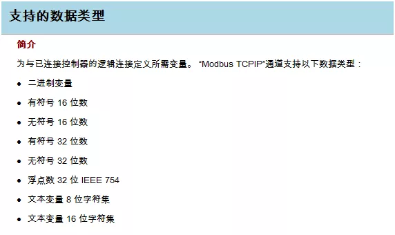
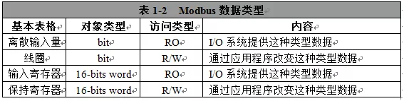
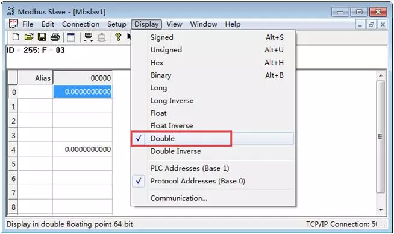
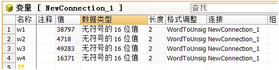
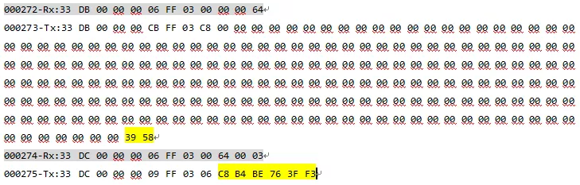

1.问题描述
大家知道目前为止WINCC Modbus TCPIP驱动是不支持64位浮点数的

但做项目往往会碰到从站使用这种类型数据，如累积流量值、电度量。那如何读取呢？
2.解决方法
Modbus协议以一系列具有不同特征的数据模型为基础。四个基本模型为：

对于一个64位浮点数，就是以16-bits word为数据模型，4个连续的保持寄存器。所以可以使用功能码0x03分别读取这4个连续的保持寄存器值，然后还原为原64位浮点数。
如以Modbus Slave为从站，设置WINCC要读取的64位浮点数，其保持寄存器地址为4x00001-4x00004。

在WINCC Modbus TCPIP驱动添加四个“无符号的 16 位值”变量读取这4个保持寄存器的值

然后用以下C脚本还原为64位浮点数
1 |
|
有一点要注意：为了保证数据的一致性，4个连续的保持寄存器必须在一帧报文读取。如下面的情况，可能会导致还原的浮点数不正确：
WINCC需读取Modbus Slave的一个16位整型数据（其保持寄存器地址为4x00001）、一个64位浮点数（其保持寄存器起始地址为4x00100）（当然，对于这么设计从站设备的人，可以认为他不专业）。
由于WINCC优化了其Modbus TCPIP驱动报文，64位浮点数的4个寄存器会被分成两帧报文读取。
